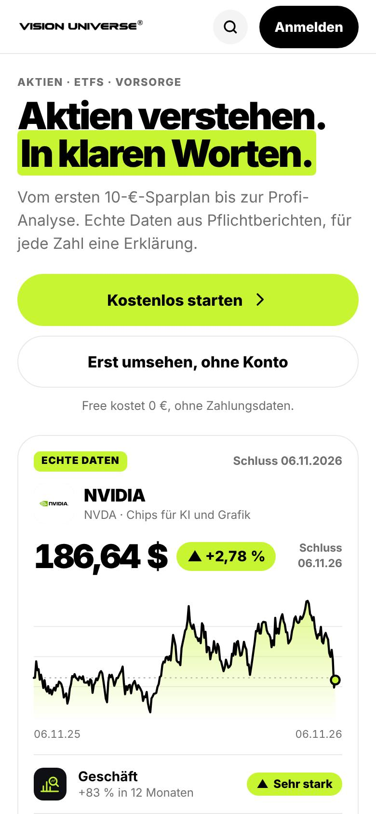
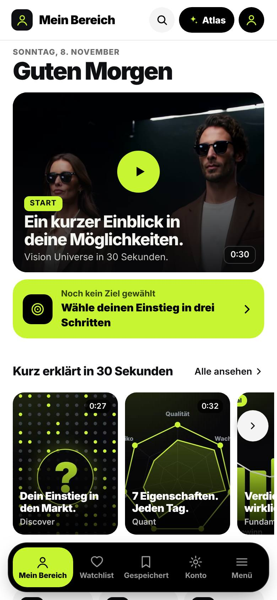

1.1
Der 5-Sekunden-Test
Was versteht jemand, der die App zum ersten Mal öffnet? Drei echte Aufnahmen vom 08.11.2026.

1
2 3
3- 1Das Versprechen stimmt, der Weg nicht. „In klaren Worten“ ist richtig. Aber direkt danach erklärt die Seite, wie die App gebaut ist, nicht was man damit erreicht.
- 2Onboarding = Produkttour. Die Ziel-Frage „Was möchtest du als Erstes?“ existiert (
/willkommen/start/), führt aber in ein Produkt und nicht zu einem ersten Ergebnis. - 3Fachnamen als Navigation. „Quant“, „Technical“, „Fundamental“, „Elliott“ sind Methoden. Einsteiger wissen nicht, welche Tür ihre Frage beantwortet. Profis brauchen die Namen, Einsteiger nicht.
Kern des Problems
Die App ist nach Herstellung sortiert (wer rechnet was), nicht nach Kundenfrage (was will ich wissen). Jede einzelne Seite ist gut erklärt. Unklar ist, wohin man gehen soll.